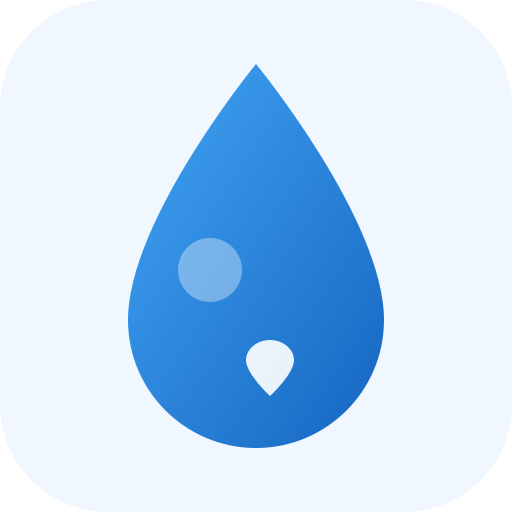

📍
將十字對準飲水機實際位置

拎水地圖
0
冰溫熱
溫熱水
熱水
🎨
★ 已收藏
免門禁/免證件
有冰水
有熱水 (泡麵)
24H 開放
🔍 探索此區域真實飲水機 (OSM)
最近取水點
載入中...
-- m
查看
＋
－
📍
📋
附近清單
0
➕
新增飲水機
正常出水
飲水機名稱
🤍
✕
🚶
步行導航路線 (OSRM)
距離約 150m，步行約 2 分鐘
Google 導航
🚨 回報機況
🔗 分享點位
回報當前運作狀態：
✅ 正常供水中
⚠️ 濾心亮紅燈
❌ 故障／停止出水
現場照片
尚無照片，歡迎在下方新增評價時上傳！
使用評價與水質回報
⭐ 5.0 (0 則)
評分：
★
★
★
★
★
📷 上傳現場照片
✕
送出評價與照片
附近飲水機清單
✕
全部
★ 收藏
冰溫熱
溫熱水
純熱水
回報新增飲水機
✕
📍 點位座標與地址：
使用 GPS 定位
經度: -- , 緯度: --
正在取得門牌地址...
搜尋
飲水機名稱 *
樓層與位置提示
開放使用權限
公開自由出入 (無門禁無證件要求)
半公開 (需登記換證或營業消費)
受限管制區 (僅特定員工或學員)
水溫提供項目
❄️ 冰水
💧 常溫冷水
🍵 溫水
♨️ 熱水 (可泡麵)
開放時間
🕒 24 小時全天候開放
現場照片 (選填，自動壓縮優化)
📷 選擇飲水機現場照片
✕
確認新增並發布
🎨 地圖圖釘顏色設定
✕
可依個人喜好自訂三種水溫等級在地圖上的顯示顏色：
含冰水（冰／溫／熱）
溫熱水（溫水＋熱水）
純熱水／單溫
✕